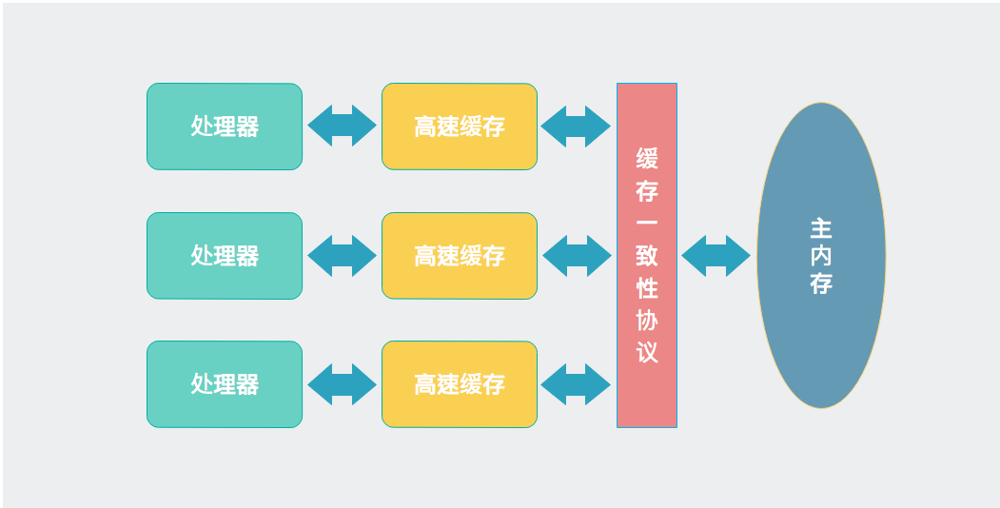
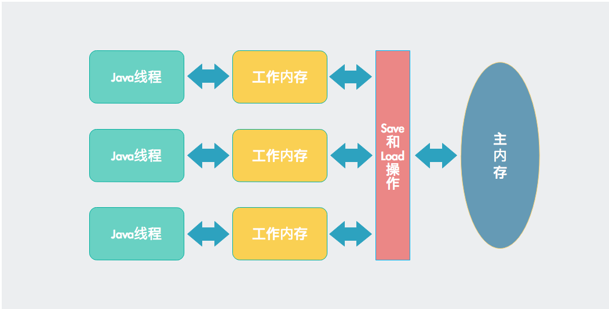

Java内存模型
Java内存模型(Java Memory Model, JMM)是学习Java并发编程的基础，许多书籍(比如《Java并发编程实战》)把这部分放到最后，就是因为JMM偏底层，理解起来比较困难。但是先学习这部分知识也是有好处的，因为先学习JMM，就能更好地理解并发编程的其他知识。
计算机内存模型
计算机中CPU负责运算，而数据存储在内存中，CPU与内存不可避免需要交互，比如读取运算数据、存储运算结果等，但是CPU与内存之间的运算速度相差几个数量级，所以CPU与内存之间一般都会有多层高速缓存。
现代CPU一般都有多个核心，每个核心都有自己的高速缓存，但这引入了一个新的问题：缓存一致性。如果多个核心都处理同一块主内存，可能导致它们缓存的数据不一致，所以处理器核心在访问缓存时需要遵循一些协议，比如MSI、MESI等。
尽管不同架构计算机体系的内存模型并不完全相同，但是CPU、高速缓存、主内存之间的交互关系基本如下图所示。

Java内存模型
由于各种硬件和操作系统访问内存存在差异，Java虚拟机规范定义了一种Java内存模型来屏蔽这种差异，让Java程序在各种平台下都能达到一致的内存访问效果。
主内存与工作内存
变量访问规则
JMM对变量的访问制定了如下规则
- JMM规定所有变量都存储在主内存
- 每个线程都有自己的工作内存，工作内存存储了所需变量的副本
- 线程只能操作自己的工作内存，不能直接操作主内存，不同线程的工作内存彼此不可见
内存间交互操作
类似于处理器的缓存一致性协议，JMM也规定了主内存与工作内存之间的交互协议。
首先，JMM规定了8种原子性操作
- lock 作用于主内存，标记一个变量被某个线程独占
- unlock 作用于主内存，把一个被锁定状态的变量释放出来
- read 作用于主内存，把变量的值从主内存传递到到工作内存
- load 作用于工作内存，把read操作得到变量的值赋予变量副本
- use 作用于工作内存，把变量的值传给执行引擎
- assign 作用于工作内存，把从执行引擎接受到的值赋予变量
- store 作用于工作内存，把变量的值传递到主内存
- write 作用于主内存，把store操作的到的值赋予主内存变量
其次，JMM还规定了在执行上述8种操作时必须遵守的一些繁琐规则，这些规则实践起来很麻烦，在此就不细讲，有需要的同学可以参考《深入理解Java虚拟机》第12章。
类似于CPU、高速缓存、主内存之间的交互关系，线程、主内存、工作内存三者的交互关系如下所示

指令重排序
在执行程序时，为了提供性能，处理器和编译器常常会对指令进行重排序，但是不能随意重排序，它需要满足以下两个条件：
- 在单线程环境下不能改变程序运行的结果
- 存在数据依赖关系的不允许重排序
单线程
int a = 0; // A
int b = 1; // B
int c = a + b; // C
根据重排序的规则，操作A和操作B的执行顺序是不确定的，但是操作C依赖操作A和操作B，所以操作C一定是最后执行。
单线程环境下，重排序不会造成程序错误，反而会提高程序性能
多线程
多线程环境下，重排序可能会造成意想不到的结果。
int a = 0;
boolean flag = false;
// 线程A执行
public void write() {
a = 2; // 1
flag = true; // 2
}
// 线程B执行
public void read(int a) {
if (flag) { // 3
System.out.println("a = " + a); // 4
}
}
由于操作2有可能先于操作1执行，所以最后的结果可能是0。
volatile变量特殊规则
可见性
是指当一个线程修改了volatile变量的值，这个新值对其他变量是立即可见的。
这是因为当写一个volatile变量时，JMM会把该线程对应的本地内存中的共享变量值立即刷新到主内存中，当读一个volatile变量时，JMM会把该线程对应的本地内存设置为无效，直接从主内存中读取共享变量。
volatile变量的可见性并不代表它在多线程环境下是一定是安全的
比如如下代码，多线程执行add()并不安全。
volatile int a = 0;
public void add() {
a++;
}
volatile变量使用场景
由于volatile只能保证可见性，所以只有在同时满足以下两种场景时才是安全的
- volatile变量的结果不依赖当前值，或者能够保证只有一个线程改变volatile变量的值
- volatile变量不需要和其他变量共同参与不变性约束
volatile boolean shutdown = false;
public void shutdown() {
shutdown = true;
}
public void doWork() {
if(!shutdown) {
// doWork
}
}
禁止重排序
- 如果第一个操作为volatile读，则不管第二个操作是什么，都不能重排序。这个操作确保volatile读之后的操作不会被编译器重排序到volatile读之前；
- 当第二个操作为volatile写是，则不管第一个操作是什么，都不能重排序。这个操作确保volatile写之前的操作不会被编译器重排序到volatile写之后；
- 当第一个操作volatile写，第二操作为volatile读时，不能重排序。
指令重排序多线程章节线程不安全的代码，可以使用volatile关键字解决，根据规则操作1一定会在操作2之前执行。
int a = 0;
volatile boolean flag = false;
// 线程A执行
public void write() {
a = 2; // 1
flag = true; // 2
}
// 线程B执行
public void read(int a) {
if (flag) { // 3
System.out.println("a = " + a); // 4
}
}
先行发生原则
先行发生原则(happens-before)概念用来阐述多线程之间的内存可见性，如果A happens-before B，那么A的操作结果对B可见。
下面是happens-before原则规则：
- 程序次序规则：一个线程内，按照代码顺序，书写在前面的操作先行发生于书写在后面的操作；
- 锁定规则：一个unLock操作先行发生于后面对同一个锁额lock操作；
- volatile变量规则：对一个变量的写操作先行发生于后面对这个变量的读操作；
- 传递规则：如果操作A先行发生于操作B，而操作B又先行发生于操作C，则可以得出操作A先行发生于操作C；
- 线程启动规则：Thread对象的start()方法先行发生于此线程的每个一个动作；
- 线程中断规则：对线程interrupt()方法的调用先行发生于被中断线程的代码检测到中断事件的发生；
- 线程终结规则：线程中所有的操作都先行发生于线程的终止检测，我们可以通过Thread.join()方法结束、Thread.isAlive()的返回值手段检测到线程已经终止执行；
- 对象终结规则：一个对象的初始化完成先行发生于他的finalize()方法的开始；
【happens-before】与【时间上先发生】的关系
happens-before不代表时间上先发生
两个操作之间存在happens-before关系，并不意味着一定要按照happens-before原则制定的顺序来执行。如果重排序之后的执行结果与按照happens-before关系来执行的结果一致，那么这种重排序并不非法。
下面我们用个例子来说明
// 以下代码在一个线程中执行
int a = 0; // A
int b = 1; // B
根据【程序次序规则】A happens-before B，但是由于指令重排序的存在，交换A与B的执行顺序对结果没有影响，那么JVM不会认为这种重排序非法
时间上先发生也不代表happens-before
例如以下的例子
private int a;
// 线程A执行
public Test setA(int a) {
this.a = a;
return this;
}
// 线程B执行
public int getA() {
return a;
}
假如线程A先执行，线程B后执行，由于这两个线程并不满足happens-before的八条规则，所以他们之间不存在happens-before关系。
原子性、可见性、有序性
回顾JMM的相关操作和规则，我们发现JMM是围绕在并发过程中如何处理原子性、可见性和有序性这3个特征来建立的。
原子性
JMM直接保证原子性的操作包括read、load、use、assign、store和write，如果需要更大范围的原子性，JMM还提供了lock和unlock这两种操作。
另外Java还提供了synchronized关键字，被synchronized关键字修饰的方法或代码块具有原子性。
可见性
可见性是指一个线程修改了共享变量的值，其他线程可以立即得知这个修改。上面我们说到volatile关键字可以保证可见性，另外Java还有2个关键字可以实现可见性，即synchronized和final。
有序性
Java程序中的有序性可以总结为一句话：如果在本线程内观察，所有操作都是有序的；如果在一个线程观察另一个线程，所有操作都是无序的。前半句是指“线程内表现为串行语义”，后半句是指“指令重排序”和“工作内存与主内存同步延迟”。
Java语言提供了volatile和synchronized两个关键字保证线程之间操作的有序性。
参考文档
- 《深入理解Java虚拟机》
本作品采用知识共享署名 4.0 国际许可协议进行许可，转载请注明原文链接
本文链接：https://schhx.github.io/2018/06/20/Java内存模型/